Decouple intake from inference
Used queues so the web tier could accept bursts without waiting synchronously for compute capacity.
Case study 04 / Software + cloud systems
A custom AWS autoscaling system that expanded from zero to fifteen EC2 workers and returned correct predictions across a 1,000-image workload.
01 / Problem
The workload required a web tier, asynchronous inference workers, and scale-to-zero behavior, but managed AWS Auto Scaling could not be used. Capacity decisions therefore had to be made by application logic.
The design also had to preserve request-to-result correlation while workers appeared and disappeared in response to queue depth.
02 / Architecture
A Flask web tier accepted work, S3 stored images, SQS decoupled requests from inference, EC2 workers ran PyTorch recognition, and a custom controller adjusted capacity between zero and fifteen instances.

The controller used workload state rather than a managed scaling policy, making scaling behavior part of the implemented system.
03 / Decisions
Used queues so the web tier could accept bursts without waiting synchronously for compute capacity.
Mapped queue state to custom EC2 worker decisions, including expansion to fifteen workers and return to zero.
Preserved the relationship between each submitted image and its recognition response through the asynchronous path.
Measured prediction correctness and end-to-end latency across the complete 1,000-image workload.
04 / Outcome
The system returned 1,000 out of 1,000 correct predictions at 0.961 seconds average latency while scaling the EC2 inference pool from zero to fifteen workers.